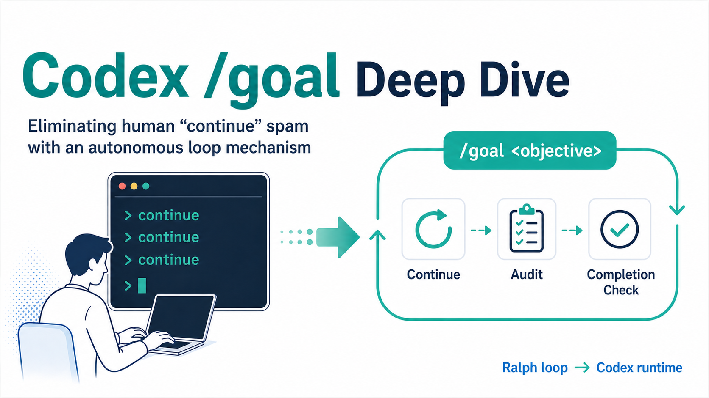
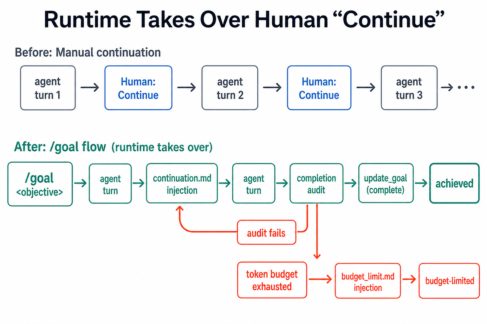
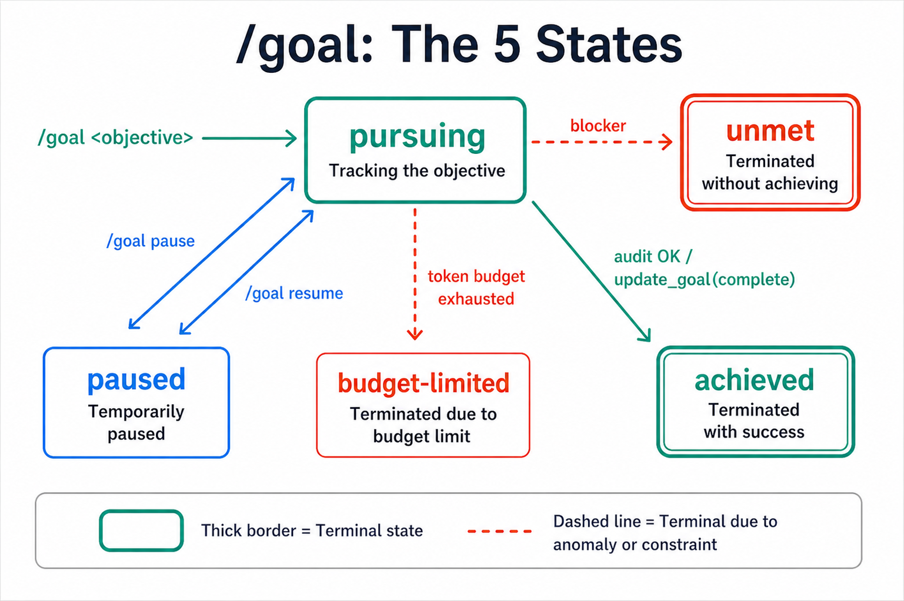
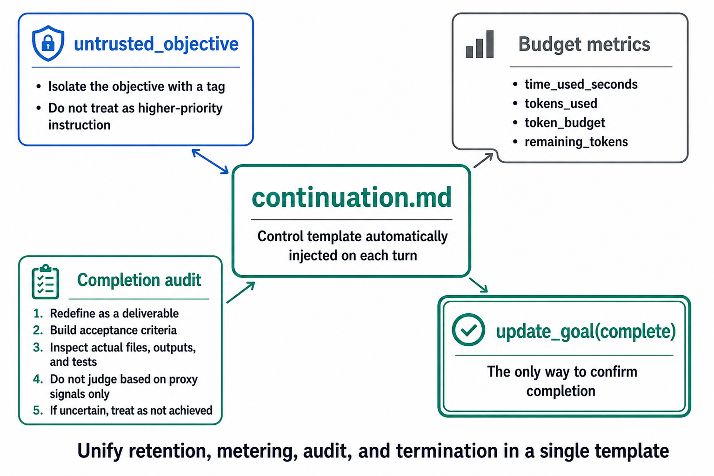
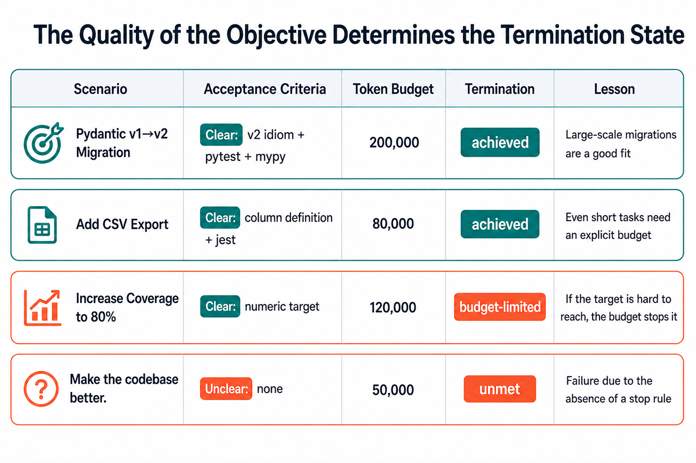
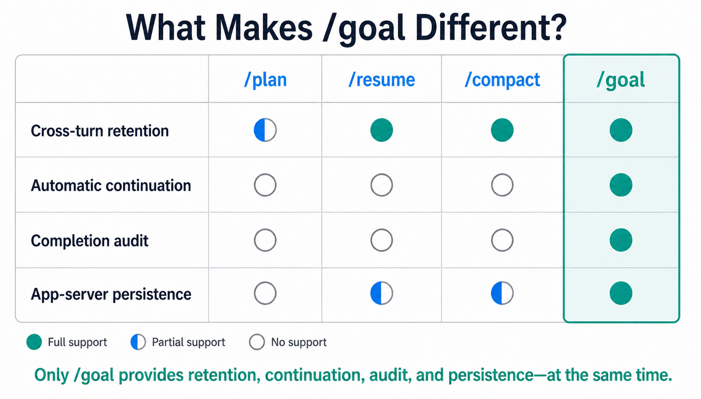
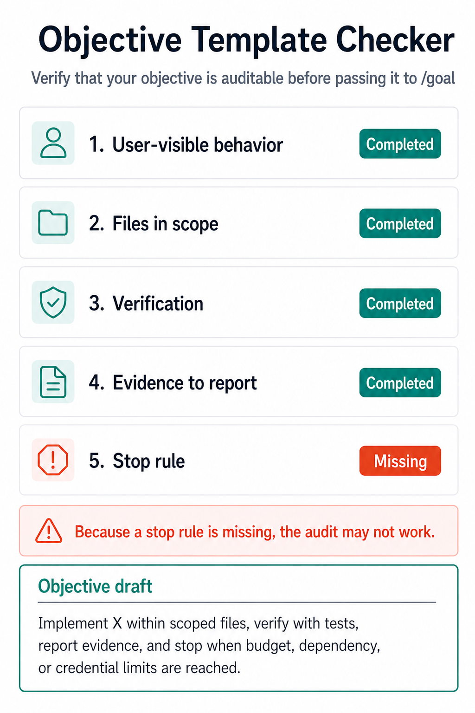

What Is Codex /goal? How It Replaces "Keep Going" Prompts¶

Caption: /goal moves repeated human "continue" prompts into a runtime loop for continuation, audit, and completion checks.
For / Key Points
For: DevOps and platform engineers operating coding agents in enterprise environments.
Key Points:
/goalpersists an objective across turns and keeps working until achieved, blocked, paused, or budget-limited- Completion is based on evidence audit, not proxy signals such as effort or a green test suite alone
- Missing Stop rules are the largest operational failure mode
When you give a coding agent a large task, the annoying part is often not the implementation itself. It is reading the result, realizing it is not done, and typing "keep going" again. Codex CLI 0.128.0 moves that repetition into the command runtime. 5
The question in this article is how /goal turns "keep going" into a bounded state machine. For Codex CLI setup, execution modes, pricing, and the broader guide map, start with the Codex CLI Complete Guide. For concrete objective examples and antipatterns, use the Codex /goal Practical Guide.
That pattern of sending an agent back to the same objective is often called the Ralph loop. Geoffrey Huntley's original post presents the minimal form as a bash loop. 6 /goal decomposes that idea into prompt templates, states, budgets, and persisted app-server APIs.
If /goal does not work locally
/goal is not a shell subcommand like codex goal; it is a slash command inside the interactive Codex CLI TUI. Typing /goal in a normal terminal, codex exec, or the Codex Desktop chat box will not start it. Some builds also keep the goals feature flag disabled, visible as goals ... false in codex features list. To try the experimental feature, enable it with codex features enable goals. It still requires a compatible interactive TUI build where /goal is exposed, so it is not yet available in every stable environment.
Why Repeated "Keep Going" Became a Runtime Feature¶
Question answered by this section: what does /goal change compared with a normal next-turn instruction?
The short answer is that /goal moves "keep going" from the user into the Codex runtime. Simon Willison described Codex CLI 0.128.0 as adding OpenAI's own version of the Ralph loop, pointing to continuation.md and budget_limit.md as templates injected at the end of a turn. 7
In a normal conversation, the user reads each result and decides whether to ask for another turn. For migrations, test repair, and quality work, that manual check is often the bottleneck. /goal keeps the objective, elapsed time, token usage, budget, and remaining budget in the loop so the agent can choose the next concrete action.

Caption: continuation.md is injected after a turn. Completion is confirmed only when the audit passes and update_goal is called.
This is not an infinite-work feature. budget_limit.md tells the agent, after the token budget is reached, not to start new substantive work and to wrap up with useful progress, remaining work, blockers, and a clear next step. 2 The value of /goal is bounded iteration, not unlimited autonomy.
/goal as a State Machine¶
Question answered by this section: which lifecycle states explain /goal behavior?
/goal becomes clearer when treated as a state machine rather than a single prompt. Issue #20536 reports local verification of pursuing, paused, achieved, unmet, and budget-limited states. 4 Because this issue asks for documentation and is not itself a formal spec, this article treats those state names as medium-confidence observed behavior.
The initial active state is pursuing. When a user sets /goal <objective>, Codex keeps the objective and continues checking unmet requirements across turns. /goal pause temporarily stops the lifecycle, /goal resume continues it, and /goal clear removes the goal.

Caption: The five observed /goal states and transition conditions. Solid lines show normal completion; dashed lines show abnormal terminal paths.
The key point is that achieved is not self-attestation. continuation.md asks the agent to restate the objective as concrete success criteria, map requirements to evidence, and inspect real files, command output, test results, PR state, or other evidence. 1 Proxy signals do not complete the goal by themselves.
unmet should be read as a blocked or weakly verified end state. budget-limited is not necessarily failure. If the agent leaves useful progress and the next required input, the user can increase the budget or narrow the objective.
continuation.md and budget_limit.md¶
Question answered by this section: what prompt design supports the autonomous loop?
The core design is in continuation.md. The user objective is wrapped in <untrusted_objective> and treated as task data, not higher-priority instructions. 1 That boundary helps with prompt-injection risk, but it also fixes the objective as the thing being audited.

Caption: The turn-injected template holds four responsibilities: objective retention, measurement, audit, and terminal update through update_goal.
continuation.md has four responsibilities: retain the objective, expose time and token metrics, run a completion audit, and finish through update_goal. The audit builds a prompt-to-artifact checklist and requires evidence for each explicit requirement.
budget_limit.md uses the same objective and usage context but assumes the system has already marked the goal as budget-limited. It instructs the agent to avoid new substantive work and summarize remaining work and blockers. 2 The dangerous version of a Ralph loop cannot stop; /goal gives budget exhaustion its own behavior.
The app-server README shows the same structure at the API layer. It lists thread/goal/set, thread/goal/get, thread/goal/clear, thread/goal/updated, and thread/goal/cleared, tying objective, token budget, and usage accounting to thread state. 3 The goal is not just conversation mood; it is persisted thread state.
What Happens in Real Scenarios¶
Question answered by this section: how does objective quality affect the terminal state?
The outcome of /goal depends on more than model quality. It depends on whether the objective includes acceptance criteria, file scope, verification, evidence to report, and a Stop rule. The same 120,000-token budget can be healthy if the goal is measurable, or wasteful if the objective is vague.

Caption: Acceptance-criteria quality drives terminal state. Vague objectives can spend the budget and still end as unmet.
| Scenario | Acceptance Criteria | Budget | Terminal State | Lesson |
|---|---|---|---|---|
| Pydantic v1 to v2 migration | Clear: all files use v2 idioms, pytest passes, mypy is clean | 200,000 | achieved | Large migrations are a natural fit |
| CSV export feature | Clear: columns, file scope, jest pass | 80,000 | achieved | Short tasks still benefit from explicit budgets |
| Reach 80% coverage | Clear numeric target | 120,000 | budget-limited | Useful when the numeric target is hard to reach |
Make the codebase better. | Unclear: none | 50,000 | unmet | Classic failure from missing Stop rules |
Pydantic v1 to v2 migration is a good /goal fit because scope and success criteria can be enumerated. A CSV export feature can also close cleanly if columns, target files, and tests are specified.
Coverage to 80% is different. The target is clear, but the budget may not be enough. In that case, budget-limited is useful if the agent reports what tests were added, which areas remain, and what the next budget should buy.
The dangerous objective is Make the codebase better. It lacks the definition of better, scope, verification commands, and stop conditions. In enterprise settings, this objective shape should be rejected before /goal starts.
Relationship to /plan, /resume, and /compact¶
Question answered by this section: how is /goal distinct from adjacent slash commands?
/plan, /resume, and /compact all matter for long-running work, but they own different responsibilities. /plan structures work before execution, /resume reopens a previous session, and /compact manages context pressure. /goal adds objective retention and completion audit as a lifecycle.

Caption: Unlike adjacent commands, /goal is the one slash command that combines cross-turn retention, automatic continuation, completion audit, and persistence.
/plan helps define what should happen, but it does not automatically keep auditing and continuing across turns. /resume returns to a thread, but it does not necessarily carry an objective and budget lifecycle. /compact protects the context window, not the termination condition.
In enterprise practice, /goal should usually follow planning. Use /plan to pin acceptance criteria, then set /goal with the objective and Stop rule. Separating design from execution gives the agent a concrete definition of done.
Pitfalls and Mandatory Stop Rules¶
Question answered by this section: what must enterprise teams enforce to use /goal safely?
The biggest failure mode is writing the objective as a wish. /goal persists the objective, but it does not make a weak objective strong. Without a Stop rule, the audit can always find one more possible improvement.
Enterprise teams should standardize a five-part objective template.
- user-visible behavior: the change a user can observe
- files in scope: where the agent may edit
- verification: commands, tests, or logs to inspect
- evidence to report: proof required at completion
- stop rule: budget, dependency, credential, or approval boundary

Caption: An objective without a Stop rule leaves the /goal audit without a clear stopping condition.
Use the interactive widget below to fill the five elements and generate an objective draft.
Widget: An interactive checker for the five-part objective template. Missing Stop rules are the most common failure pattern.
A Stop rule does not make the agent less capable. It makes long-running work reviewable. If token budget, dependency boundaries, credential gaps, and approval waits are explicit, budget-limited and unmet become decision points rather than confusing failure logs.
Related topics such as comparison with Claude Managed Outcomes, placement in the five-layer harness model, and competitive benchmarking belong in separate articles. The conclusion here is narrower: /goal turns the Ralph loop into a state machine that can stop.
openai/codex,
codex-rs/core/templates/goals/continuation.mdat commit6014b66. ↩↩openai/codex,
codex-rs/core/templates/goals/budget_limit.mdat commit6014b66. ↩↩openai/codex,
codex-rs/app-server/README.md. ↩openai/codex Issue #20536, Document the /goal CLI command and Goals lifecycle in slash-command docs. ↩
openai/codex release tag,
rust-v0.128.0. ↩Geoffrey Huntley, Ralph Wiggum as a "software engineer". ↩
Simon Willison, Codex CLI 0.128.0 adds /goal. ↩